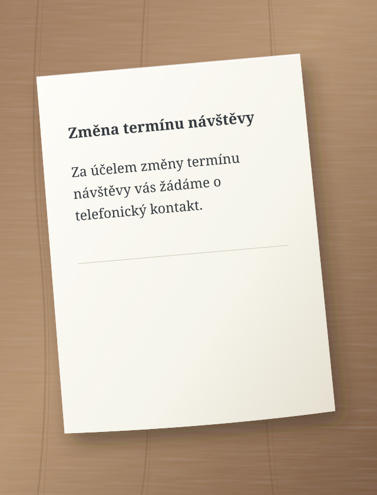
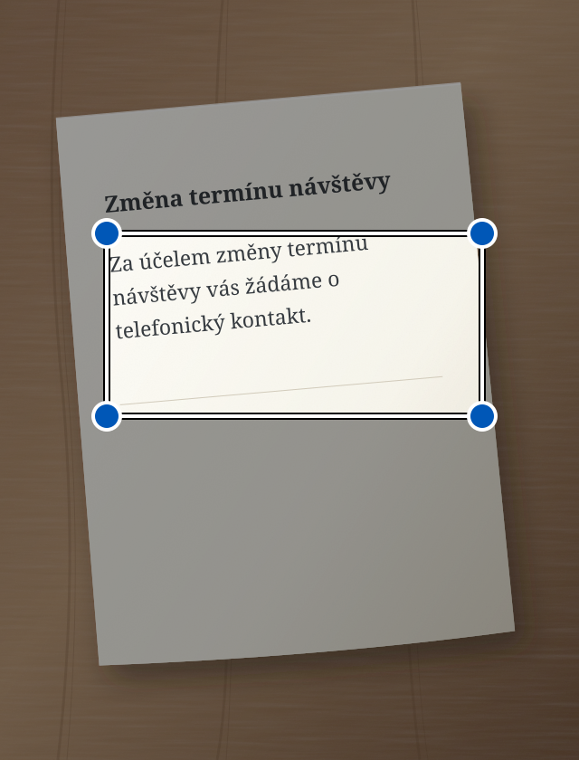

Za účelem změny termínu návštěvy vás žádáme o telefonický kontakt.
↳ Zjednodušený text
Chcete změnit termín návštěvy? Zavolejte nám.
Ukázkový příklad zjednodušení textu.
Snáze pochopit. Snáze jednat.
Jednoduchý jazyk je pro každého.
Sedno tvoříme hlavně pro nedoslýchavé a pro lidi, kteří mají potíže porozumět složitým textům. Jednodušší slova mohou pomoci každému z nás.
Od slov k významu
Dva jednoduché kroky.
01
Přidejte text
Napište ho, vložte, vyfoťte nebo řekněte nahlas.
02
Zjednodušte nebo opravte
Vyberte, co potřebujete. Výsledek se objeví ve stejném poli. Můžete ho dál upravovat.
i AI se může mýlit. Důležité informace zkontrolujte v originálu.
Podívejte se, co stisknout
Sedno krok za krokem.
Každý příklad ukazuje jednu činnost. Kroužek ukazuje, co stisknout. Šipka ukazuje, co následuje.
Jsou to zjednodušené nákresy obrazovek. Texty jsou příklady. Vzhled aplikace se může trochu lišit.
Zjednodušte psaný text
Máte složitou zprávu? Napište ji nebo vložte do Sedna.
1 Napište text a stiskněte „Zjednodušit“.
Zkontrolujte, že je vybraný režim Zjednodušit.
Sedno – zjednodušit text:
Za účelem změny termínu návštěvy vás žádáme o telefonický kontakt.
Zjednodušit
2 Přečtěte si jednodušší text.
Výsledek se objeví ve stejném poli. Můžete ho upravit.
Zjednodušený text
Chcete změnit termín návštěvy? Zavolejte nám.
AI se může mýlit
Zjednodušit
Zjednodušte text z fotografie
Máte dopis na papíře? Vyfoťte ho v Sednu.
1 Stiskněte fotoaparát.
Otevře se fotoaparát v aplikaci.
Sedno – zjednodušit text:
Napište nebo vložte text
Zjednodušit
2 Stiskněte „Vyfotit“.
Držte telefon tak, aby byla celá stránka i text dobře vidět.
Vyfotit text

Vyfotit
3 Označte text a stiskněte „Zjednodušit“.
Posuňte rohy rámečku kolem textu, který chcete zjednodušit.
Označit text
Posuňte rohy rámečku a označte text.

Zjednodušit
4 Přečtěte si jednodušší text.
Sedno přečte text z fotografie a zjednoduší ho.
Zjednodušený text
Chcete změnit termín návštěvy? Zavolejte nám.
AI se může mýlit
Zjednodušit
Fotografie zůstane v telefonu. AI dostane jen rozpoznaný text. Pokud se zjednodušení nepodaří, text zůstane v poli a můžete ho upravit.
Zjednodušte mluvený text
Chcete raději mluvit než psát? Vyberte režim Zjednodušit.
1 Stiskněte mikrofon.
Pokud telefon požádá o přístup k mikrofonu, povolte ho.
Sedno – zjednodušit text:
Napište nebo vložte text
Zjednodušit
2 Řekněte text nahlas.
Mluvte ve vybraném jazyce. Na konci udělejte krátkou přestávku.
Mluvte ve vybraném jazyce
Sedno mění řeč na text.
3 Přečtěte si jednodušší text.
Po 1,5 sekundě ticha Sedno automaticky zjednoduší rozpoznaný text.
Zjednodušený text
Chcete změnit termín návštěvy? Zavolejte nám.
AI se může mýlit
Zjednodušit
Řeč se rozpoznává v telefonu. Potřebujete Android 13 nebo novější, podporované zařízení a stažený model vybraného jazyka. Nahrávání trvá nejvýše minutu. Stop nahrávání zruší.
Opravte psaný text
Chcete opravit zprávu? Před psaním vyberte režim Opravit.
1 Napište text a stiskněte „Opravit“.
Režim změníte šipkami nad velkým tlačítkem.
Sedno – opravit text:
zitra nemužu přijit na schuzku
Opravit
2 Přečtěte si opravený text.
Sedno opraví chyby. Zkontrolujte, zda text říká to, co chcete.
Opravený text
Zítra nemůžu přijít na schůzku.
AI se může mýlit
Opravit
Poslechněte si opravený text
V režimu Opravit může telefon přečíst text z pole nahlas.
1 Stiskněte reproduktor.
Nejdřív opravte text. Pak stiskněte reproduktor vlevo.
Opravený text
Zítra nemůžu přijít na schůzku.
AI se může mýlit
Opravit
2 Poslechněte si text.
Telefon čte nahlas. Tlačítko stop zastaví čtení.
Telefon čte nahlas
Poslouchejte text ze svého telefonu.
Čtení probíhá v telefonu. V nastavení telefonu si stáhněte hlas vybraného jazyka pro čtení bez internetu.
Jazyk
Vyberte si svůj jazyk.
Sedno podporuje 13 jazykových variant. V aplikaci otevřete menu a vyberte Jazyk. Výběr platí také pro text, diktování a čtení. Sedno zjednodušuje a opravuje; nepřekládá mezi jazyky.
Vaše texty. Vaše kontrola.
Soukromí od začátku.
Fotografie a zvuk zůstávají v telefonu. Do AI se odesílá pouze text.